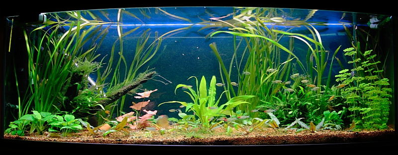
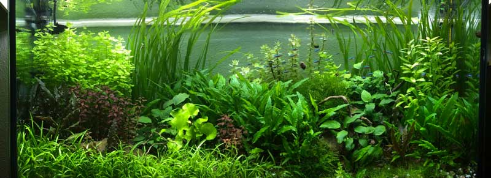

Tipos de plantas para acuario de agua dulce:
Gran parte del planeta está cubierto de agua y no es sorprendente que la vegetación acuática sea extremadamente rica y diversa, dando forma a diferentes ecosistemas. Tanto en agua salada como en agua dulce, podemos encontrar varias plantas que cumplen funciones esenciales para el equilibrio de la vida acuática. Sin embargo, no todas estas especies pueden sobrevivir adecuadamente en entornos compactos y artificiales, como un acuario. Por lo general,
los tipos de plantas para acuario de agua dulce se dividen en 6 grandes grupos:.
Las casi 100 especies originarias de América del Sur que componen el género botánico Hydrocotyle son perfectas para principiantes por sus fáciles cuidados. Entre ellas, la Hydrocotyle leucocephala es muy popular en los acuarios de agua dulce por su forma atractiva y sus brillantes hojas de color verde oscuro, igual que la Hydrocotyle verticillata y la Hydrocotyle tripartita. A diferencia de otras plantas exuberantes, las Hydrocotyle son plantas de acuario de agua dulce fáciles de cuidar que se adaptan bien incluso a los acuarios recién estrenados. También son muy versátiles y se pueden cultivar directamente en el sustrato o como una planta de acuario flotante. Se adaptan perfectamente a aguas templadas o cálidas a temperaturas de 20 a 30 °C. En estas condiciones óptimas, su crecimiento es rápido, pero la planta apenas supera los 40 cm de altura.
.
AquariumFish resolvera sus dudas para montar su primer acuario